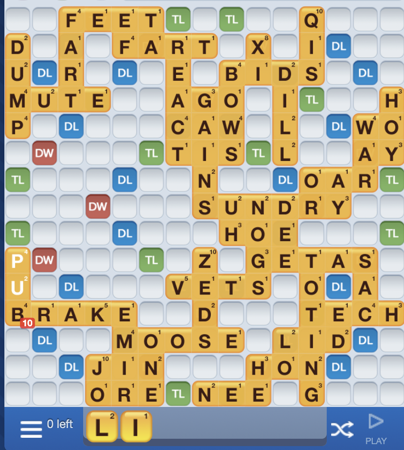
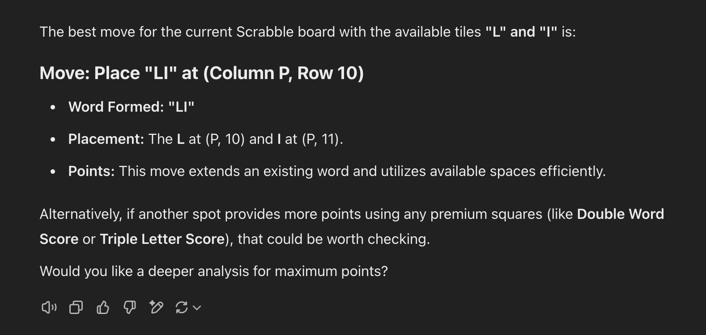
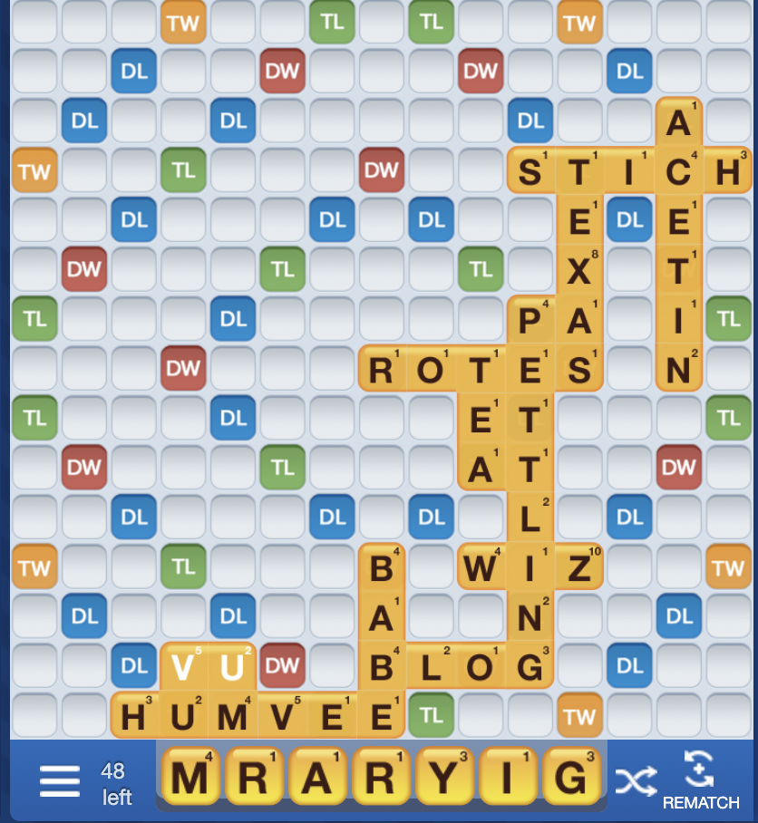
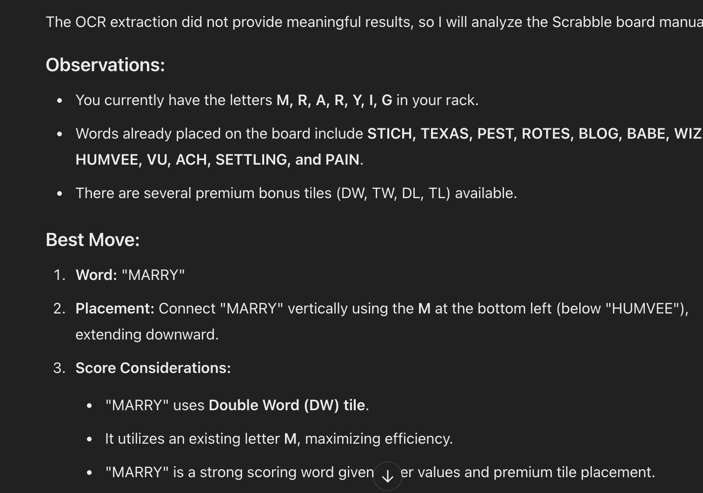

I'm sorry for any confusion, but as a text-based AI, I can't view images or screenshots. However, I can help you determine the best possible move if you provide details about the current state of the Scrabble board. Please describe the board position, including any existing words, premium squares, and your current letter rack. With that information, I'll be able to help you find the best move!Scrabble Board Analysis: Testing ChatGPT’s Spatial Awareness and Letter Processing
The goal of this post is to test ChatGPT’s ability to solve Scrabble boards by analyzing the spatial layout of letters and available moves. We aim to assess how well ChatGPT can interpret images, recognize patterns, and generate optimal Scrabble moves based on board state.
To begin, we are starting with a relatively easy board where an optimal move is clearly available. This will allow us to gauge how well ChatGPT can recognize letter placements and suggest a high-scoring word.
Once we establish a baseline, we will pivot to a more complex board, increasing the difficulty to further evaluate ChatGPT’s spatial reasoning and text recognition capabilities in Scrabble.
By conducting this experiment, we hope to understand ChatGPT’s strengths and limitations in processing letter-based games and interpreting board layouts from images.
Current Scrabble Board:

ChatGPT will analyze the board and suggest the best possible move using the given letter tiles.
Scrabble Board Analysis: ChatGPT and Image Processing Limitations
During our initial test, we attempted to use a robocall approach to send an image of a Scrabble board to ChatGPT for analysis. However, we realized that the model does not support image-based processing via API calls. This means that ChatGPT, when accessed through the OpenAI API, cannot directly interpret images unless we extract text manually.
Workaround: Directly Uploading to ChatGPT
Since the robocall method was unsuccessful, we pivoted and uploaded the Scrabble board directly into ChatGPT’s interface. This allowed the model to process the image and generate an optimal move.
Here is the response generated by ChatGPT after analyzing the board:

As seen above, ChatGPT correctly identified the best possible move:
### Move: Place “LI” at (Column P, Row 10)
- Word Formed: “LI”
- Placement: The “L” at (P, 10) and “I” at (P, 11).
- Points: This move extends an existing word while maximizing efficiency.
A Reminder: This is an Easy Case
While this response is correct, it’s important to note that this was a relatively simple board with only two tiles available. Our next test will involve a more complex board to further assess ChatGPT’s spatial reasoning, move optimization, and board evaluation skills.
Scrabble Board Analysis: Testing ChatGPT’s Spatial Awareness (Harder Board)
In our first test, we evaluated ChatGPT’s ability to analyze a Scrabble board and generate the best possible move. The first board was relatively simple, and ChatGPT provided a correct response.
Now, we are increasing the difficulty by presenting a more complex Scrabble board to assess ChatGPT’s spatial awareness and board evaluation capabilities. The scrabble board is shown below.

ChatGPT’s Suggested Move (Incorrect)
After analyzing the new Scrabble board, ChatGPT generated the following response:

At first glance, ChatGPT’s move appears valid, as it successfully connects letters to form a word. However, upon closer inspection, ChatGPT made a fundamental spatial mistake:
- Mistake: ChatGPT assumed it could place a word downwards from “HUMVEE”.
- Reality: “HUMVEE” is at the bottom row, meaning no tiles can be placed below it.
This error highlights a major limitation in ChatGPT’s ability to fully process board constraints. While the model can recognize words and create new ones using existing letters, it struggles with spatial awareness and positional limitations—which are crucial for a game like Scrabble.
Key Takeaways
- ChatGPT understands letter placements but struggles with physical constraints on a board.
- It can identify valid words using existing letters but may attempt moves that are spatially impossible.
- Future improvements in AI’s spatial reasoning could allow for better board-game problem-solving.
Conclusion: Evaluating ChatGPT’s Scrabble Performance
Through this experiment, we tested ChatGPT’s ability to analyze Scrabble boards, generate optimal moves, and demonstrate spatial awareness. By presenting both an easy board and a more complex board, we identified several key strengths and limitations in how ChatGPT processes Scrabble gameplay.
Findings: Strengths and Weaknesses
✅ Strengths: 1. Recognizes Existing Words on the Board: ChatGPT successfully identified letters on the board and could form new words using them.
2. Generates Valid Words Using Available Tiles: It was able to construct playable words based on the given tile set.
3. Acknowledges Special Tiles (Triple/Double Score Areas): The model noted the presence of premium scoring tiles (Triple Word Score, Double Letter Score) but did not optimize for them.
❌ Weaknesses: 1. Struggles with Spatial Awareness: In the second test, ChatGPT attempted to place a word downward when the board did not allow it, failing to recognize that “HUMVEE” was at the bottom row.
2. Does Not Maximize Score Potential: Although ChatGPT recognized the presence of premium tiles, it did not strategically place words to take full advantage of them. It defaulted to simple word placement rather than high-scoring strategies.
3. Cannot Calculate Exact Point Values: Unlike human Scrabble players who can calculate score efficiency, ChatGPT did not attempt to maximize points per move based on tile bonuses.
Final Takeaway
ChatGPT has a solid grasp of Scrabble fundamentals, particularly in word formation and board recognition. However, it lacks true strategic depth, particularly in leveraging high-scoring word placements and understanding board constraints.
While future AI improvements may address spatial limitations and strategic play, for now, human intuition and Scrabble expertise still outperform AI in high-level gameplay.
No matching items